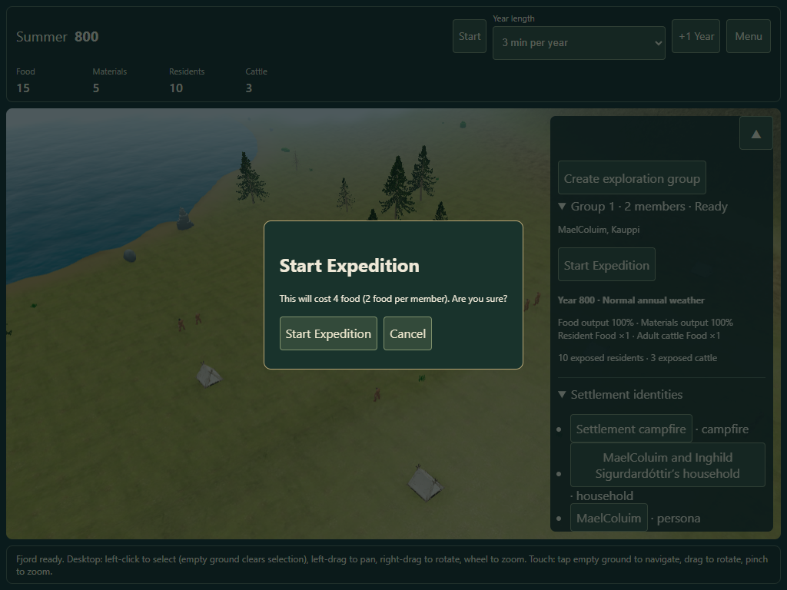
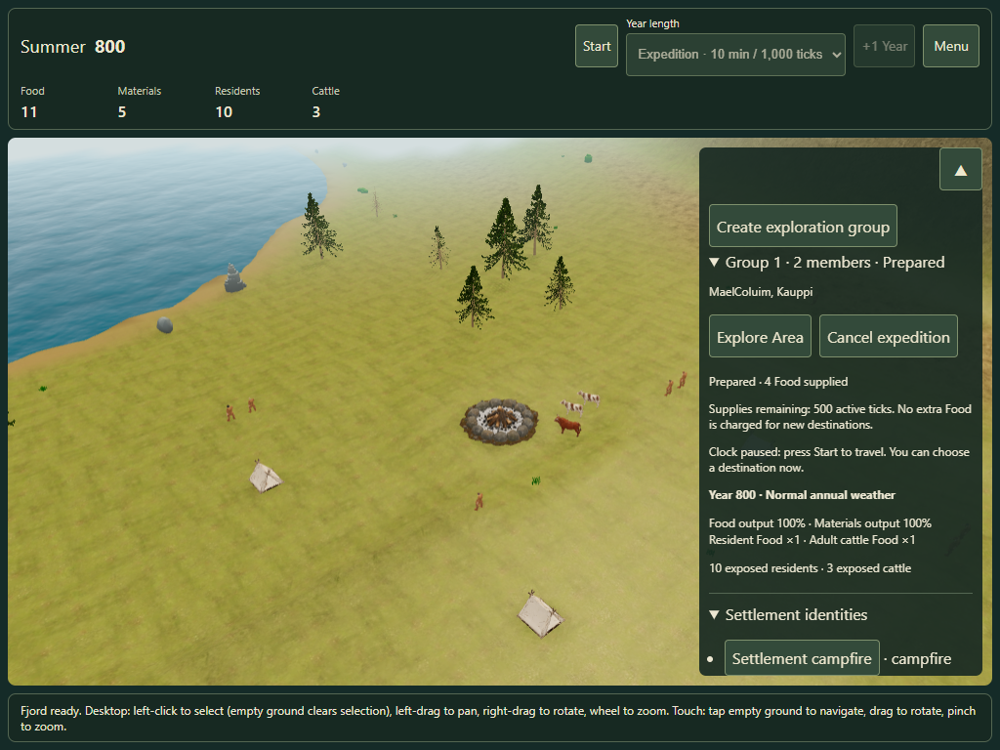
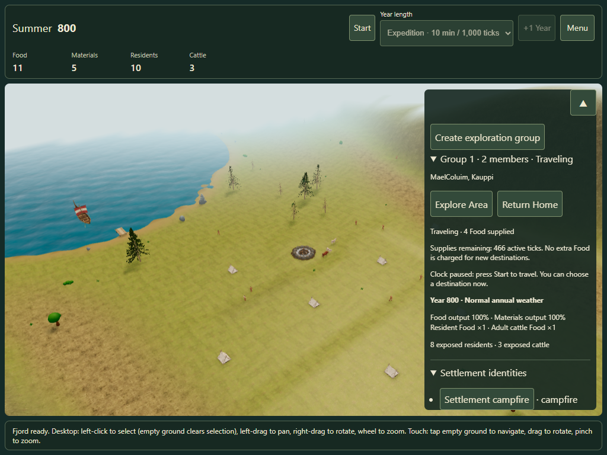
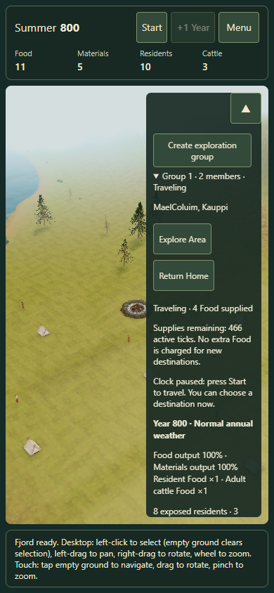

Expedition Mode · Confirm once, explore with carried supplies
Create an exploration group, select residents and add them. With no selection, expand the group and choose Start Expedition. The concise confirmation shows the total Food price and 2 food per member. While expeditions are active, the whole running game uses 10 min per 1,000 ticks.
Cancel in the confirmation costs nothing. Confirming spends the Food permanently. There is no refund after starting, even if you cancel before departure or return early. Destinations and redirects use the same pack without buying more Food.
Then choose Explore Area → tap a land destination. Normal taps navigate outside target mode. Each member follows their own safe route with native Run. Supplies cover 500 active ticks including the return; Core turns the group home early enough for the real reached trail. No distant target is promised. Pause and hidden tabs stop time and consumption. The normal user pace returns after the last active group finishes.

Explicit cost before confirmation
Prepared: no rations consumed while at home
Free redirects and confirmed discovery
Touch controls and supplies counterThe owner's later no-refund clarification supersedes the refund clauses in the original implementation brief. Historic reports remain unchanged. Latest physical iPhone/iPad feedback remains open; desktop Edge touch emulation is recorded separately.